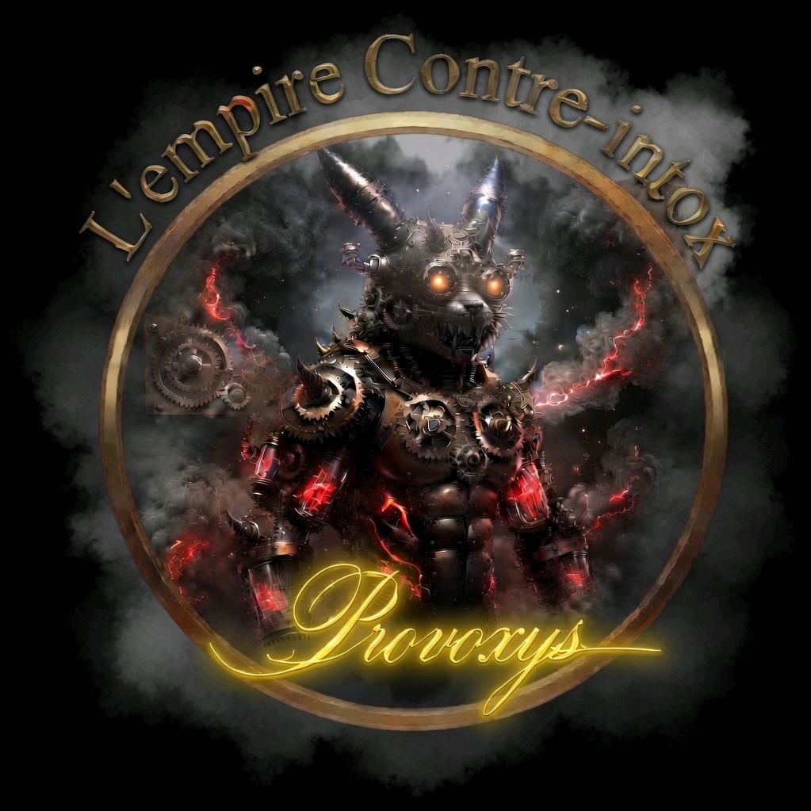

Emprise pseudo-médicale, spirituelle et familiale, effraction psychique, dossier clinique, témoignages, droit et reconstruction : le dossier complet sur les pratiques visant à modifier de force l'orientation sexuelle ou l'identité de genre d'une personne. Le live de Provoxys, mot pour mot — chaque donnée vérifiée, chaque source traçable.
« Elles cherchent à détruire la personnalité profonde d'un individu pour y substituer une façade conforme aux attentes du groupe. »
Ce dossier reprend mot pour mot le script du live « Le Danger des Thérapies de Conversion » de Provoxys : la mécanique de l'emprise, le dossier clinique, cinq témoignages croisés, ce qu'en disent la pop culture et le droit, et le chemin de la reconstruction. Toutes les données du script ont été vérifiées par l'Empire contre Intox — y compris deux corrections importantes, signalées en encadré : un chiffre clinique inexact et un numéro d'urgence obsolète.
La mécanique de l'emprise : acteurs du mirage, effraction psychique, violence rituelle, ostracisme.
Le dossier clinique — SSPT-C, dissociation, risque suicidaire — et ce que les études disent vraiment.
Cinq témoignages croisés, la pop culture qui en parle, le droit qui la sanctionne, le monde qui (ne) la protège (pas).
La reconstruction, la résilience, et les lignes d'écoute — vérifiées une à une.
Objectifs pédagogiques
Comprendre les mécanismes, distinguer le vérifié de l'approximatif, savoir où s'adresser.
Comprendre
Les acteurs et les mécanismes de l'emprise — pseudo-médicale, spirituelle, familiale — qui rendent ces pratiques possibles.
Distinguer
Les signaux cliniques réellement documentés (SSPT-C reconnu par la CIM-11, dissociation) des statistiques inventées ou mal attribuées.
Agir
Le cadre légal français, le statut mondial, et des lignes d'écoute vérifiées une à une — pas recopiées d'un annuaire périmé.
Le live · Empire Contre-Intox
Le Danger des Thérapies de Conversion
« Décortiquer l'arsenal méthodologique des agresseurs et poser un cadre d'analyse implacable. » Le script complet du live, dans l'ordre, conservé mot pour mot.
Le script du live
Qu'est-ce que les pratiques de conversion ?
01
INTRODUCTION : QU'EST-CE QUE LES PRATIQUES DE CONVERSION ?
Les pratiques de conversion — historiquement et abusivement appelées "thérapies de conversion" — désignent un ensemble de manœuvres, de pressions et de traitements répétés visant à modifier ou à réprimer l'orientation sexuelle ou l'identité de genre d'une personne. Ces interventions reposent sur le postulat scientifiquement faux et obsolète selon lequel les personnes LGBTQIA+ souffriraient d'une anomalie, d'une maladie ou d'une déviance spirituelle qu'il conviendrait de "guérir" ou de "corriger".
Ces pratiques ne disposent d'aucun fondement médical ou scientifique. Elles sont unanimement condamnées par les grandes institutions de santé mondiales (comme l'Organisation Mondiale de la Santé) qui les qualifient de violations des droits humains fondamentaux. Loin d'être de simples conseils ou des espaces de discussion, elles s'apparentent à des systèmes d'endoctrinement et de harcèlement psychologique.
Elles se manifestent principalement à travers trois sphères :
La sphère pseudo-médicale : Où des praticiens autoproclamés ou des professionnels déviants utilisent des théories psychologiques obsolètes ou détournent des outils comme l'hypnose pour susciter le dégoût de soi.
La sphère spirituelle et religieuse : Où la foi de l'individu est instrumentalisée à travers des rituels de purification, des séances d'exorcisme ou des prières d'injonction au changement, instillant la terreur de la damnation.
La sphère familiale et sociale : Où l'entourage exerce un chantage affectif, un isolement forcé ou des pressions quotidiennes pour contraindre la victime à se soumettre à ces protocoles.
Le véritable danger de ces pratiques réside dans leur nature intrinsèquement violente : elles cherchent à détruire la personnalité profonde d'un individu pour y substituer une façade conforme aux attentes du groupe. L'impact de cette effraction psychique est dévastateur, entraînant des traumatismes profonds, des ruptures identitaires et des taux de détresse psychologique extrêmement élevés.

Réalisé parProvoxys
Partie I
La mécanique de l'emprise
02
PARTIE 1 : LA MÉCANIQUE DE L'EMPRISE (Théorie, Acteurs & Outils)
Objectif : Décortiquer l'arsenal méthodologique des agresseurs et poser un cadre d'analyse implacable.
La mécanique de l'emprise — illustration du dossier
1. Les Acteurs du mirage
Les Prétendus Psychologues et Thérapeutes : Utilisation abusive de théories psychanalytiques obsolètes (le "père absent", la "mère fusionnelle") pour pathologiser une orientation sexuelle ou une identité de genre saine. Ils inversent la déontologie en créant de la souffrance là où il n'y en a pas, sous couvert d'une neutralité scientifique totalement factice.
Les Hypnothérapeutes Dérivants : Instrumentalisation de l'état de transe pour forcer des suggestions d'aversion. L'hypnose est ici détournée de sa visée thérapeutique pour devenir une arme d'effraction psychique, visant à associer le désir ou l'identité de la victime à des stimuli de dégoût, de nausée ou de terreur.
Les Structures Religieuses (Clergés, Pasteurs, Anciens, Starets) : Utilisation de l'autorité spirituelle pour imposer un chantage au salut. La foi de la victime est retournée contre elle-même : son identité est qualifiée d'« infestation », de « péché structurel » ou de « possession ».
2. Les Mécanismes d'Abus
L'Effraction Psychique : Viol des barrières inconscientes par des suggestions forcées sous transe ou par des interrogatoires répétés.
La Violence Rituelle : Protocoles d'épuisement sensoriel. L'affaiblissement physique par des jeûnes prolongés, des privations de sommeil et des séances de prières intrusives ou d'exorcismes collectifs.
L'Ostracisme et la Mort Sociale : Isolement programmé de la victime. Rupture forcée avec ses cercles amicaux, ses lectures, ses accès Internet, et menace d'exclusion définitive du groupe ou de la famille.
Partie II
Le dossier clinique — l'impact des violences
03
PARTIE 2 : LE DOSSIER CLINIQUE – L'IMPACT DES VIOLENCES
Objectif : Démontrer scientifiquement et cliniquement ce que ces pratiques détruisent chez l'être humain.
La dissociation — illustration du dossier
1. Le Syndrome de Stress Post-Traumatique Complexe (SSPT-C)
Contrairement à un choc unique, les violences des pratiques de conversion s'étalent sur le temps, provoquant un trauma complexe :
L'Hypervigilance constante : La victime vit dans la peur permanente que ses pensées, ses regards ou ses micro-expressions trahissent son identité réelle.
Les Flashbacks et Intrusions : Réactivation involontaire des scènes d'exorcisme, des suggestions d'aversion ou des interrogatoires humiliants, déclenchée par des mots, des odeurs ou des contextes religieux/médicaux.
2. La Dissociation et la Dépersonnalisation
Pour survivre à l'effraction psychique (notamment sous hypnose détournée), l'esprit de la victime se fragmente :
La Dissociation : Coupure nette entre le corps, les émotions et la conscience. La victime subit les événements en spectatrice d'elle-même, déconnectée de ses propres sens.
L'Auto-Héautoscopie et l'Anesthésie Affective : Incapacité à ressentir la joie, l'amour ou le désir, même après l'arrêt des pratiques. L'esprit a éteint le système émotionnel pour ne plus souffrir.
3. La Destruction de l'Attachement et l'Idéation Suicidaire
La Trahison des Figures d'Attachement : Quand la violence vient des parents (figures de protection) ou des thérapeutes/prêtres (figures d'autorité et de soin), la capacité de la victime à faire confiance est totalement anéantie.
Le Risque Suicidaire : Statistique clinique majeure : le risque de tentative de suicide est multiplié par 9 chez les jeunes ayant subi ces dérives. La haine de soi internalisée pousse à concevoir la mort comme unique espace de liberté.
Partie III
Les témoignages croisés
04
PARTIE 3 : LES TÉMOIGNAGES CROISÉS (Analyse des Parcours)
Objectif : Donner la parole aux survivants en utilisant des termes cliniquement irréprochables.
1. Le Volet Pseudo-Médical et Hypnose
Témoignage A — Le Prétendu Psychologue
« Cet intervenant utilisait son titre pour me persuader que mon homosexualité était le résultat d'une "faille narcissique" liée à mon enfance. Il a détourné des concepts pour me faire douter de ma propre santé mentale, me poussant à chercher des traumatismes imaginaires. Cette pathologisation forcée a engendré une confusion identitaire profonde qui a brisé mon estime de moi. »
Témoignage B — L'Effraction par l'Hypnose
« Les séances d'hypnose ont été détournées comme un outil de manipulation pour créer des réflexes de dégoût physique. On m'imposait des suggestions de nausée et d'angoisse viscérale à la simple vue d'un homme. Ces pratiques n'ont évidemment pas modifié mon orientation sexuelle, elles ont provoqué une effraction psychique grave, détruisant mes repères sensoriels et mon rapport à l'intimité pendant des années. »
2. Le Volet Religieux et Institutionnel
Témoignage C — Le Milieu Évangélique · La « Restauration »
« Dans mon église, on enrobait la violence de mots doux comme "restauration identitaire" ou "guérison des blessures". On nous imposait des groupes de parole qui étaient en réalité des cellules de surveillance mutuelle. Chaque pensée "déviante" devait être confessée sous peine d'exclusion. Cette manipulation cognitive m'a poussé à une haine de moi-même totale, m'obligeant à jouer un rôle pour éviter le bannissement. »
Témoignage D — Le Milieu Orthodoxe · La Purification Forcée
« Ma famille m'a conduit auprès d'un ancien qui a décrété que mon identité de genre était une "infestation spirituelle". J'ai subi des rituels d'exorcisme, des onctions forcées et des prostrations physiques jusqu'à l'épuisement complet. Cette violence rituelle, vécue sous la contrainte, a laissé des séquelles traumatiques sévères. Ce n'était pas de la religion, c'était une agression caractérisée contre mon intégrité physique et mentale. »
Témoignage E — Le Milieu Catholique Charismatique · La Délivrance
« On m'a enfermé durant une "retraite de délivrance". Privé de sommeil, soumis à des prières de groupe intrusives où des dizaines de personnes hurlaient sur moi pour chasser mes "démons". Ce protocole d'épuisement sensoriel visait à briser ma volonté pour que j'accepte leurs suggestions. J'en suis sorti vivant, mais psychiquement fragmenté. »
Partie IV
La pop culture et les médias en parlent
05
PARTIE 4 : LA POP CULTURE ET LES MÉDIAS EN PARLENT
Objectif : S'appuyer sur des œuvres culturelles et des enquêtes majeures pour illustrer concrètement la réalité de ces dérives.
1. Documentaires de Référence (À analyser en live)
"Homothérapies, conversion forcée" (Arte, 2019) par Bernard Nicolas : Enquête internationale indispensable qui infiltre des mouvements charismatiques et évangéliques en France, en Allemagne et aux États-Unis. Ce documentaire montre à quel point les structures agissent de façon souterraine en Europe et déconstruit le double discours de ces organisations qui affirment agir "par amour" tout en détruisant psychologiquement les participants.
"Boy Erased : Truth Revealed" / Enquêtes sur le mouvement Ex-Gay (Netflix) : Ces formats documentaires mettent en lumière la faillite systémique des grands centres américains (comme Exodus International) et exposent les témoignages des dirigeants repentis qui admettent l'inefficacité totale et la toxicité de leurs méthodes.
2. Films et Séries (Pour décrypter les représentations visuelles)
"Boy Erased" (Film de Joel Edgerton, 2018) : Adapté des mémoires de Garrard Conley. Idéal pour illustrer l'emprise familiale (parents paniqués par leur foi institutionnelle) et les techniques pseudo-psychologiques des centres évangéliques (évaluation des "failles" familiales, exercices de virilisation forcée).
"Come as You Are" (The Miseducation of Cameron Post, Film de Desiree Akhavan, 2018) : Grand Prix au Festival de Sundance. Ce film montre la version insidieuse des centres pour adolescents : l'utilisation d'activités de plein air et d'une ambiance "colonie de vacances" pour masquer un harcèlement moral continu et une culpabilisation permanente basée sur la haine de soi internalisée.
"Sex Education" (Série Netflix - Saison 2) : À travers certains arcs narratifs, la série aborde subtilement le poids des injonctions de conformité religieuse et les traumatismes liés aux tentatives de répression de l'orientation sexuelle au sein de la communauté.
Partie V
L'arsenal juridique et débats
06
PARTIE 5 : L'ARSENAL JURIDIQUE ET DÉBATS (Réponses Implacables)
Objectif : Désarmer les justifications des agresseurs par le droit et la science.
L'arsenal juridique — illustration du dossier
Loi du 31 janvier 2022 (France) : Ces pratiques constitute un délit spécifique. Les peines vont de 2 ans de prison et 30 000 € d'amende à 3 ans de prison et 45 000 € d'amende si la victime est mineure ou en situation de vulnérabilité. Les professionnels de santé risquent une radiation définitive en plus des peines pénales.
Le Sophisme du Consentement : Le droit pénal rappelle qu'on ne peut pas consentir à sa propre destruction ou à des traitements dégradants. Sous l'effet du chantage familial, de l'isolement ou de la terreur spirituelle, le consentement n'existe pas. C'est le principe même de l'emprise.
Le Bouclier de la Liberté Religieuse : La liberté de conscience et de culte est absolue dans la sphère privée des croyances, mais elle s'arrête net dès lors qu'elle sert de prétexte à des violences psychologiques, des abus de faiblesse ou des actes de torture mentale. La loi de la République protège l'intégrité des citoyens contre l'obscurantisme.
Enquête complémentaire · Empire contre Intox
Statut mondial des pratiques de conversion
07
CE CHAPITRE N'EST PAS DU SCRIPT DU LIVE : C'EST UNE SYNTHÈSE VÉRIFIÉE PAR L'EMPIRE CONTRE INTOX (JUILLET 2026)
Trois bases de données internationales suivent l'interdiction des pratiques de conversion dans le monde. Leurs chiffres divergent car elles ne comptent pas la même chose — et c'est précisément ce qu'il faut comprendre avant de citer un total.
17États membres de l'ONU avec un ban national (ILGA World, base continue, juin 2026)
26Pays ou régions avec une forme de régulation, y compris subnationale (Equaldex, base collaborative, consultée juillet 2026)
150+Pays sans aucune protection légale spécifique (Global Equality Caucus, mai 2025)
Le chiffre « ~28 pays » parfois cité (Wikipédia) date en réalité de décembre 2023 et n'a pas été refondu depuis, malgré des modifications cosmétiques de la page en 2026 — à utiliser avec cette réserve.
Europe — la région la plus avancée
Pays
Statut
Date
Malte
Ban nationale complet — premier pays européen
2016
Allemagne
Ban national
2020
France
Ban national (loi n° 2022-92)
31 janvier 2022
Grèce
Ban national
2022
Espagne
Régulation administrative (2023) + criminalisation votée au Congrès le 25 juin 2026 (178 pour, 32 contre — Vox, 138 abstentions PP) ; passage au Sénat encore requis
2023 / 2026
Belgique
Ban national
2023
Chypre
Ban national
2023
Portugal
Ban national
2024
Pays-Bas
Adopté par le Sénat (57 voix pour, 15 contre) le 16 juin 2026 — sanction royale restant à formaliser
2026
Autriche
Simple initiative parlementaire écologiste, bloquée par l'ÖVP — pas de projet de loi gouvernemental formel
—
Au total, 8 États membres de l'Union européenne ont un ban national. L'Initiative Citoyenne Européenne dédiée a recueilli 1 128 063 signatures vérifiées (soumise le 17 novembre 2025) ; la Commission européenne y a répondu le 13 mai 2026 par une recommandation non contraignante, prévue pour 2027 — pas (encore) une loi européenne.
Amériques
Pays
Statut
Canada
Ban criminel national complet (projet de loi C-4, sanction royale le 8 décembre 2021)
Brésil
Interdiction via résolutions du Conseil fédéral de psychologie, validées par la Cour suprême (STF) en 2020 — pas une loi votée
Équateur
Loi réelle depuis 2012/2014, mais application très défaillante — des « cliniques de déshomosexualisation » clandestines persistent
Mexique
Loi fédérale en vigueur depuis le 8 juin 2024, complétée par ~18-19 des 32 États
Chili, Argentine, Uruguay, Paraguay
Bans indirects, via l'interdiction de diagnostiquer l'homosexualité/la transidentité comme trouble dans leurs lois de santé mentale
États-Unis
23 États + Washington D.C. interdisent pour les mineurs (Movement Advancement Project, au 2 juillet 2026) ; aucune loi fédérale
Asie & Océanie
Pays
Statut
Date
Israël
Directive administrative du ministère de la Santé (le projet de loi pénale n'a jamais abouti)
2022
Taïwan
Lettre administrative du ministère de la Santé (pas un règlement formel)
2018
Vietnam
Dépêche administrative sans force de loi contraignante ni sanctions précisées (HRW)
2022
Nouvelle-Zélande
Conversion Practices Prohibition Legislation Act — dispositions pénales en vigueur
19 février 2022
Afrique, Moyen-Orient et une grande partie de l'Asie : généralement aucune interdiction spécifique. L'ILGA World recense 65 pays qui criminalisent encore les relations homosexuelles en juin 2026 (en légère hausse pour la première fois en presque dix ans, avec le Burkina Faso et Trinité-et-Tobago) — un chiffre à distinguer des « ~70 pays » parfois cités, qui provient d'un rapport ILGA non réédité depuis 2020. Dans ces pays, les pratiques de conversion s'inscrivent le plus souvent dans un cadre plus large de répression de l'identité LGBTQIA+ elle-même, sans loi dédiée les encadrant ni protection pour les victimes.
Partie VI
La reconstruction, la résilience & les ressources
08
PARTIE 6 : LA RECONSTRUCTION, LA RÉSILIENCE & LES RESSOURCES
Objectif : Tracer le chemin clinique et social pour sortir des décombres de l'emprise et fournir les contacts d'urgence.
La reconstruction — illustration du dossier
1. Les Étapes de la Guérison
La Déprogrammation Cognitive : Identifier les schémas de pensée imposés sous emprise. Réapprendre à nommer les faits : ce n'était pas un accompagnement, c'était une agression. Se détacher de la culpabilité et de la honte instillées par les bourreaux.
La Prise en Charge du Psychotraumatisme : S'orienter exclusivement vers des psychologues ou psychiatres spécialisés en psychotraumatologie, formés aux outils de désensibilisation (comme l'EMDR ou les thérapies cognitives adaptées) et impérativement inclusifs. L'espace thérapeutique doit être un lieu de sécurité absolue, dénué de tout jugement.
La Restauration des Liens et la Famille de Cœur : Reconstruire sa structure sociale en choisissant des personnes bienveillantes. Remplacer l'amour conditionnel des cercles abuseurs par un soutien inconditionnel. Réapprivoiser son corps, ses désirs et son intégrité, en affirmant sa légitimité pleine et entière à exister.
2. Liens et Contacts des Associations de Référence (À afficher à l'écran)
Rien à Guérir : rienaguerir.fr — Collectif français spécifiquement créé pour lutter contre les thérapies de conversion, accompagner les survivants, recueillir les témoignages et porter les dossiers devant la justice.
Le Refuge : le-refuge.org — Ligne d'urgence 24h/24 : 06 31 59 69 50. Association qui propose un hébergement d'urgence et un accompagnement social/psychologique pour les jeunes LGBTQIA+ rejetés par leur famille ou victimes d'ostracisme.
SOS Homophobie : sos-homophobie.org — Ligne d'écoute : 01 48 06 42 41. Écoute anonyme, soutien juridique et rapports annuels sur les discriminations. Un point d'entrée essentiel pour signaler un abus ou obtenir une orientation légale.
09 39 03 63 03
Le Refuge — ligne d'écoute nationale
Appel ou SMS, 7j/7 de 8h à minuit. Hébergement d'urgence et accompagnement pour les jeunes LGBTQIA+ rejetés par leur famille.
SOS Homophobie · 01 48 06 42 41Rien à Guérir · X/@RienAGuerir3114 · Numéro national de prévention du suicide
Nommer l'emprise, c'est déjà commencer à s'en défaire.
Ce dossier conserve mot pour mot le script du live de Provoxys. Chaque sphère décrite ici — pseudo-médicale, spirituelle, familiale — prospère sur le même terreau : l'isolement de la victime, le silence de l'entourage, l'absence d'information vérifiée. À l'inverse, chaque donnée sourcée, chaque loi correctement citée, chaque numéro d'urgence vérifié fait reculer l'emprise. C'est le travail de l'Empire contre Intox : remettre des faits là où l'intox — un chiffre gonflé, un numéro périmé, une confusion de bonne foi — affaiblirait, sans le vouloir, la cause qu'elle prétend défendre.
Collectif
Empire contre Intox
Un collectif pour remettre du contexte, de la méthode et du sens critique dans le débat public. Ce dossier prolonge le live en donnant au public une version lisible, structurée et partageable — chaque donnée ramenée à sa source, chaque mécanisme expliqué.